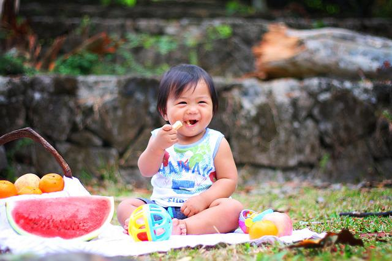
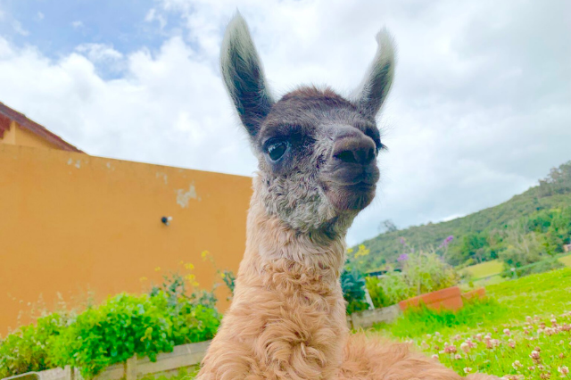

News
Vegetarian Kids as Healthy as Omnivorous Kids
“A study of nearly 9,000 children found those who eat a vegetarian diet had similar measures of growth and nutrition compared to children who eat meat. The study, published in Pediatrics and led by researchers at St. Michael’s Hospital of Unity Health Toronto, also found that children with a vegetarian diet had higher odds of underweight weight status, emphasizing the need for special care when planning the diets of vegetarian kids.” -Science Daily Read Full Article
Spotlight
Vani Fiore Llama
You can find this sweet llama at Juliana’s Animal Sanctuary in Colombia. She was brought to the sanctuary at 2 days old because she was blind. Vani came from a breeder who raises llamas for wool and entertainment, petting zoos, for example. The owner was going to end her life, but the local vet knew about Juliana’s and offered to have them come pick her up. Vani received treatment and did recover her eyesight. Now, she is often spotted on Juliana’s Instagram trying to be the center of attention.
Sanctuary Tales

What is a Farm Sanctuary?
In the future, this page will be used to discuss different farm sanctuaries. From their humble beginnings to the amazing things they do now. None of them have asked or paid me to write about them. I do it after admiring them for years from afar. But some people don’t even know what a farm sanctuary is and how they operate, so I will do a quick dive into that for the first article. A farm sanctuary is a place for typically farmed animals Read Full Article